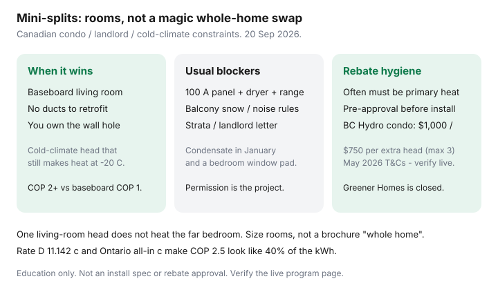

Utilities · Canada
Ductless Mini-Split Heat Pumps for Canadian Homes and Some Apartments: Cost and Constraint Guide
Baseboard households want relief and then meet a condo board, a 100 A panel, and a balcony that drifts shut in January. A ductless mini-split can be the honest machine when there are no ducts to retrofit. It is not a sticker that makes the far bedroom warm, and it is not a federal grant form — Greener Homes and new OHPA applications are closed.
This is constraint-first. Walk COP and backup in heat pump vs furnace. Price resistive kWh in the baseboard playbook. Check live stacks in rebates by province.
Disclosure: Heat-pump quote tools are an offer type. Saving Optimizer may earn a commission if we later add partner links. We do not currently claim manufacturer, utility, or contractor partnerships. This is education — not a specification, rebate approval, or installation advice.
Key takeaways
- A mini-split wins when you have no useful ducts, a living room you actually sit in, and permission for the wall hole and outdoor unit. Waiting for a “whole-home ducted” project is how another winter of COP 1 happens.
- Panel space, outdoor snow clearance, condensate in a Canadian January, and neighbour noise kill more quotes than ¢/kWh.
- Landlord and condo/strata permission is the project. Get it in writing before you pay a deposit. BC Hydro’s condo path (May 2026 T&Cs) even wants a pre-approval code before install.
- Size rooms. One head in the living room does not retire every baseboard. Far bedrooms stay on resistance unless you add heads.
- Many rebates require the pump to be primary heat (often ≥50% of the suite to 21°C) and may want baseboards decommissioned. An “add-on comfort head” can be ineligible.
When mini-splits beat waiting for a full ducted retrofit
Ducted cold-climate heat pumps are wonderful in a house that already has decent trunks. Many Canadian apartments, wartime bungalows, and Québec plexes do not. Waiting for a furnace-shaped project is how you buy another January of baseboard kWh.
Have the mini-split conversation when you own (or have a landlord who will own) the penetration and the pad, the envelope is no longer a barn, and you will stay long enough to care. A renter’s version is “will you install if I stay three years,” not a personal loan for the landlord’s asset. Federal Greener Homes Grant documents ended 31 Dec 2025 for existing files; the Loan is closed and funding committed; OHPA intake closed 31 Jul 2026.

Electrical panel and outdoor clearances in Canadian winters
| Constraint | Why it shows up | What to ask |
|---|---|---|
| Service / panel | Compressor + existing range, dryer, and leftover baseboards | Load calculation; 100 A vs 200 A; who pulls the permit |
| Outdoor unit | Snow, drift, prevailing wind, balcony rails | Stand height, defrost drain path, who shovels the pad |
| Noise / siting | Bedroom window above the unit; neighbour bylaws | Published dB; anti-vibration pads; strata noise rules |
| Line set / condensate | January ice at the penetration | How they treat the hole; condensate at −20°C |
A lock-out strip that becomes a fancy baseboard is the trap. Ask for capacity and COP at −15°C and −25°C, not “works to −25°C.”
Landlord / condo board permission realities (high level)
This is not legal advice. In practice:
- Renters: you need the landlord’s written OK for a hole, an outdoor unit, and who pays the hydro vs who owns the asset when you leave. Ontario / B.C. / Québec tenancy rules differ; start with a letter, not a contractor booking.
- Condos / stratas: the balcony and the envelope are usually common property or exclusive-use with rules. Boards care about appearance, drip, noise, and insurance. BC Hydro’s condo heat-pump path (used 20 Sep 2026) expects strata or owner approval and a pre-approval code before install.
- Purpose-built rentals: some programs allow the account holder with a consent form. Still not a weekend DIY.
Sizing rooms vs whole-home expectations
One 12,000 BTU head in the living room heats the living room. Hallways, closed bedrooms, and a kitchen around a corner are still on baseboards. Multi-split (one outdoor, several indoor heads) is how you get closer to “the suite.” It is also more line-set politics and more panel load.
BC Hydro’s May 2026 condo terms want at least one indoor head serving a main living area, the pump covering the heat load of the area it serves down to a −5°C design temperature, and existing hard-wired electric heat decommissioned unless it is kept only as supplemental for >22°C at design weather. That is a primary-system project, not a gadget.
Operating cost vs baseboard replacement math
Baseboards are COP ≈ 1. A winter COP of 2.5 buys the same useful heat for 40% of the kWh. Labelled sketch, not a promise: 2,000 kWh of January baseboard on Hydro-Québec’s second tier (11.142 ¢ from 1 Apr 2026) is about $223 of energy after the first 40 kWh/day block. The same useful heat at COP 2.5 is 800 kWh. Ontario all-in ¢ after OER is often higher than Rate D’s second tier — which is why an Ontario baseboard suite can look worse on paper.
Convert properly in useful-heat math. Installed single-head quotes in Canadian markets often land in a few-thousand-dollar band; multi-head and panel work move it into five figures. Treat those as quote bands, not a bid. Divide net capital (after a live rebate) by the annual kWh delta.
Rebate eligibility quirks for add-on vs primary heat systems
Closed federal stacks do not pay new files. What remains is provincial and utility:
- BC Hydro Condo and Apartment Rebate Program (page + May 2026 T&Cs): $1,000 for a qualifying ductless mini-split; $750 per head on a multi-split to a maximum of three. Unit must be primarily electric-heated already; new pump must be primary; pre-approval before install; NEEP cold-climate list / published HSPF-SEER floors. Gas-primary suites are pointed elsewhere (FortisBC / Better Homes).
- CleanBC / Better Homes income-qualified paths can be richer and still require primary-heat tests (capacity to heat ≥50% of the home to 21°C). Amounts move — verify the week you sign.
- Add-on comfort heads that leave baseboards as the real system are the usual ineligibility. Do not invent a rebate from a 2023 blog.
Get two quotes that use the same design temperature and the same primary-vs-backup story. If they cannot name either, keep shopping.
Sources & date stamps
- NRCan home energy-efficiency pages — heat-pump decision framing after grant closure (used 20 Sep 2026).
- Hydro-Québec Energy Wise / Rate D 1 Apr 2026 — 11.142 ¢ second tier as the baseboard ¢.
- BC Hydro Condo and Apartment Rebate Program — $1,000 mini-split / $750 per multi-split head (max 3); primary-heat and pre-approval rules (May 2026 T&Cs, used 20 Sep 2026).
- NRCan Greener Homes / OHPA status — closed to new applicants as dated on those pages.
Frequently asked questions
Can a renter install a mini-split?
Only with written landlord permission for the hole, the outdoor unit, and who owns it when you leave. Many will say no. Do not finance the landlord’s asset on a one-year lease.
Will one head replace all my baseboards?
Usually no. It replaces the hours in the room it can throw air into. Closed bedrooms stay on resistance unless you add heads or leave doors open — which is not zoning.
Do I need a 200 amp panel?
Many full-electric retrofits do. A single head sometimes squeezes onto 100 A. Only a load calculation answers it.
Can I still get a federal heat-pump grant?
Not through new Greener Homes Grant or Loan applications. OHPA intake closed 31 Jul 2026. Provincial and utility programs are the live path — verify before you sign.
Why was my rebate denied?
Common reasons: the pump is not primary heat, no pre-approval, gas was the main heat, the outdoor unit is the wrong product list, or baseboards were never decommissioned. Read the live T&Cs.